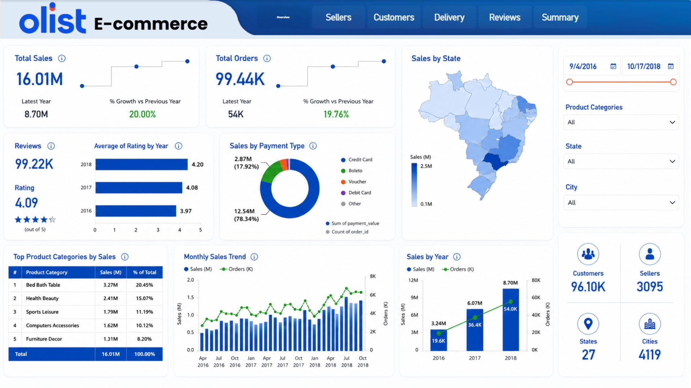

Built an end-to-end e-commerce analytics project using the public Olist dataset, including data cleaning, relational modeling, KPI design, and Power BI dashboard pages covering sales, customers, sellers, delivery, reviews, and summary insights.

This project turns raw e-commerce transaction data into a structured BI model and a set of business dashboards. The goal was to practice a realistic analytics workflow: understand the dataset, clean and relate the tables, define useful KPIs, and present the results in a way that supports business analysis.
The dataset was spread across multiple related tables, including orders, customers, sellers, products, payments, reviews, and delivery information. To analyze performance properly, the data needed to be cleaned, connected, modeled, and translated into clear metrics that could answer practical e-commerce questions.
I handled the project workflow from data preparation to dashboard delivery. This included exploring the source tables, preparing the model, building relationships, creating measures, designing the dashboard pages, and organizing the insights into a clean reporting experience.
I created an analytics-ready model and Power BI report that connects sales, orders, customers, sellers, product categories, payment behavior, delivery performance, and reviews. The report was designed as a practical e-commerce dashboard rather than a decorative visual.
This project demonstrates my ability to move from raw public data to a structured BI model and a usable dashboard. It shows data preparation, modeling, KPI thinking, dashboard design, and the ability to explain business performance through clear visuals.